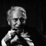

ERWIN CHARGAFF
Jochen Winter'in uyarladığı versiyondan tercüme edilmiştir.
Erwin Chargaff 11 Ağustos 1905'te, o dönemde Avusturya-Macaristan'ın parçası olan Bukovina'nın eski başşehri Czernowitz'te doğdu. Viyana'da, yaşamını yönlendirmiş şahsiyetlerden biri olan Karl Kraus'un yanında kimya ve edebiyat bilimleri öğrenimi gördükten sonra, Chargaf 1933 yılında Nazi Almanya'sından ayrılarak Paris'e geçti ve oradan da New York'taki Columbia Üniversitesi'ne gitti. 1952 yılında biyokimya dalında profesör olarak atandı. Yaptığı belli başlı işler arasında, molekülün kesin bir kopyasını elde etmeyi sağlayan DNA içinde bazların stereo-kimyasal tamamlayıcılıklarının keşfi ile kalıtımsallığın enformasyon vektörü olarak işleyiş tarzı yer almaktadır. Chargaff 1978'de yayımlanan biyografisi Le feu d'Héraclite (Fransızca çevirisi Viviane Hamy yayınları, 2006) ile özellikle dikkat çekmiştir. Burada bilimin işleyişi üzerine sert eleştirilerde bulunmaktadır. Yaşamının son yıllarında teknik uygarlığa dair çok angaje bir gözlemcisi olmuştur.
2002 yılında New York'ta, doksan yedi yaşında ölür.
E. Chargaff'ın eserleri arasında şunlar sayılabilir: Brevier der Ahnungen (2002), Abschen von der Weltgeschichte (2002), Stimmen im Labyrinth (2003).

CHARGAFF
Erwin Chargaff, 1930-1933 arasında Avrupa'da –esasen kimya dersleri verdiğiniz Berlin'de– kaldığınız ve zorunlu göçle son bulmuş süre bir yana, 1928'den beri Amerika Birleşik Devletleri'nde yaşıyorsunuz. Burası, kültürünü vicdanen reddettiğiniz ve çok sayıda metinde şiddetle eleştirdiğiniz bir ülke. Bu Amerikan sürgününden kaçma ihtiyacı hissetmediniz mi, özellikle 1974'te New York'taki Columbia Üniversitesinde onursal profesör seçildikten sonra?
1960'lı yılların başında Fransa'nın güneyinde ve Kuzey İtalya'da bir ev bulmak için yoğun araştırmalar sürdürdüm; kendimizi orada daha iyi hissedebilirdik, eşimle ben, ama bu mümkün olmadı. Buna karşılık burada, bir kültürün içinde değil, büyük bir çöp yığınının üzerinde yaşıyoruz. Bu ülke gerçek organik gelişmeyi asla tanımadı. Tocqueville, Amerikan Demokrasisi Üzerine adlı muhteşem eserinde, dünyanın bu bölümünde, kültürel farklılıkların bir iç dengenin oluşmasını engellemeye yeteceğini gayet iyi anlamıştı. Benim bakış açımdan, gerçek bir homojen kültürün böyle bir karışımdan doğabilmesi için bir mucize gerekir.
Tocqueville Amerikan felsefesinin öncelikle pragmatik olduğunu, yani başarı peşinde koşan bir düşüncenin egemenliğinde olduğunu da öngörmüştü. Gerçekten de Charles Peirce, William James ve John Dewey'nin düşünceleri sonradan bunun yolunu açtılar. Melting-pot denen şeyin içinde yaşayan insanlar için yarar ilkesi tek bağlantı öğesi gibi gözüküyor. Siz bu kavrama her zaman yabancıydınız. Asla değer vermediniz ve bundan duyduğunuz tiksintiyi bugün gayet açık ifade ediyorsunuz.
Melting-pot, en ufak ortak paydadır; buna gönderme yapılıyor olması, her şeyin paranın etrafında dönüyor olmasından, her şeyin paraya indirgenmesinden, her şeyin paranın içinde erimiş olmasındandır. Elbette Henry David Thoreau vardı. Walden ya da Ormanda Yaşam'ın yazarı. Ama ben onu terimin en iyi anlamında Amerikalı olmayan bir yazar olarak kabul ediyorum. O bir klasiktir ve bu tür üst düzey mazoşizmden zevk alan insanlarca okunmaya devam etmektedir. Ama bu insanlar çok az görülüyor, bir anlamda dev bir aspiratör onları yuttu. Egemen olan şey, düşünceyi, duyarlılığı felç eden, hatta yok etmeye kadar varan bir mekanizma.
Amerika'dan bir gece sığınağı olarak, trajik bir ülke diye, hatta şeytanın bir şakası olarak söz etmeye kadar vardırdınız.
Gerçekte Amerika'nın tarihi yok. Kabaca konuşursak: Bu topraklara iki yüzyıl boyunca yeterince insan gömülmedi. Nispeten cılız kültürel miras, başarının mutlaklaştırılmış ölçütlerine karşı bir ağırlık oluşturmuyor. Buna karşılık, genellikle bir önem taşımamış başkan portreleri kayaların üzerine kazınır, oysa üzerlerinde bu tür yüzler olmadan kayalar çok daha güzel olacak. Köktenci Quakerlik ile materyalizmin tuhaf bileşimi, Amerikan refah anlayışı, Avrupai fikirlere ciddi bir şekilde karşı koyma fikrinin esinlediği açık tiksinti ve özellikle de yerine getirilecek özel bir misyon sahibi olunduğuna dair inanç, özellikle de bilimlerde; ben asla bunları benimsemedim. Ben tamamen başka bir anlayış içinde büyüdüm ve eğitim aldım. Bu temelde –ve Tocqueville'in etkisiyle– küçük bir yergi kaleme aldım: Zavallı Amerika – Zavallı Dünya. Buradaki insanlar, tinsel yabancılaşmalarıyla, daha derin ya da daha yüksek düzeyde bulunan her şeyden kopukluklarıyla insana neredeyse acı veriyor. Her türden gerçek duyarlılık ya da saf şiir onlara grotesk, tahayyül edilemez geliyor. Gerçekten çok yazık: Amerika trajik bir ülke.
Yine de ona bağlısınız, ama bir doğa bilimleri uzmanının iç ve dış gerçekliğin temel yanlarının anlaşılması için özellikle şiirin zaruri bir anahtar olduğu kanısında olması şaşırtıcı.
Ben böyle doğdum.
Denemeci olarak çalışmalarınızı okuduğumda, sık sık bir şiir, mistisizm ve dinsellik arzusu hissediyorum ve bu doğa bilimlerinin yatıştıramayacağı bir şeydir; oysa ki bu bilimler dinin yerini tuttukları iddiasındalar, hatta dinin gereksizliğinin kanıtlandığı iddiasındalar. Bu özellikle Roger Caillois'nın fikridir.
Doğru. Görüyorsunuz, iki tür düşünce tarzı mevcut. Biri mekanist, pozitivist, indirgemeci ve doğa bilimlerinde ifade buluyor; diğeri benim lirik düşünce diye adlandırdığım şey, ama bu bir süredir Amerika'da olduğu gibi dünyanın geri kalanında da ölüdür. On sekizinci yüzyılda ve on dokuzuncu yüzyıla dek hâlâ mevcuttu. Alman edebiyatında Claudius, Hölderlin ve başka edebiyatlarda, Fransız edebiyatında Hugo, Baudelaire, Lautréamont, Rimbaud'da mevcuttu. Ardında doğa bilimleri müdahale etti. Bu tutumu gaspettiler ve belli ölçüler içinde dogmatik bir dine dönüştürüp buna inanmayı zorunlu kıldılar. Bunu açıklayabilmek için şu imgeyi rahatlıkla kullanabilirim.
Bilim insanlarını, tek tek karşınıza alıp, "Hayat nedir?" sorusunu sorarsanız, bize hayatı ortaya çıkaran şeyi, hayatın yansıdığı tepkime ve formülleri anlatırlar. Bu, aşağı yukarı, "Kitap nedir?" diye sorup da şu cevabı almaya benzer: Kitabın yapısını ayrıştırıyoruz, kâğıdı analiz ediyoruz, harflerin neye benzediğine ve hangi mürekkeple basıldıklarına bakıyoruz – ama kitabın içinde gerçekte ne olduğunu bilmiyoruz. Bu, doğa bilimleri için de geçerlidir, onlar da bunu bize söylemezler. Hiçbir bilim insanı, hiç kimse, hayatın ne olduğunu bilmiyor.
Müspet bilimlerin doğada meydana gelen olayları keyfince manipüle etme, dolayısıyla insan türünün kaderinin geleceğini kontrol etme arzularına itiraz ediyorsunuz. Bu size kendini beğenmişliğin ve cehaletin şeytansı bir meyvesi gibi geliyor, çünkü sonuçta, doğa yenilmesi ve boyun eğdirilmesi gereken bir düşman olarak görülüyor.
Modern doğa bilimleri –esasen biyolojiden söz ediyorum– doğayı sömürgeleştirmeye çabalıyorlar ve onunla savaşıyorlar. Örneğin tıp kuşkusuz ki ölümü ortadan kaldırmaya değil, hep daha öteye itmeye çabalıyor. Oysa yakınlarında dolanıp riske girilmemesi gereken doğal hudutlar vardır. Bu anlamda ben sofu bir ilkelim. Aslında bu tür girişim, başlangıçta doğa bilimlerinin misyonları arasında sayılmıyordu. Bu bilimler başlangıçta tamamen tanımlayıcıydılar. Sonra, fenomenleri açıkladıkları ölçüde, bu konuda bir şeyler icat etmek zorunda kaldılar, çünkü Tanrı bize açıklama sunmaz. Kimi zaman ister istemez haklıydılar, kimi zamansa haksız. Ama şu an için, üçüncü bir doğa bilimi, onarıcı bilim ön sırayı almakta: Doğanın işlediği kimi hatalar ortadan kaldırılmak isteniyor. Bu beni çok korkutuyor. Soya tohumlarının ya da kimi zararlı canlılara dirençli, laboratuarda üretilmiş tahıl türlerinin bütün genetiği dönüştürmesi korkunç bir şey. Yapabileceklerimizin çok azının ne olduğunu biliyoruz ve telafisi imkânsız zararlara yol açabiliriz. Besin ürünlerinin ya da canlı yaratıkların genetik koduna müdahale etmek geri dönüşsüz bir süreçtir; bu tür imalatları dünyaya saldığımızda, hayal edemeyeceğim kadar büyük bir suç işlemiş oluruz.
On yıllar boyunca ünlü bir biyokimyacıydınız, DNA üzerine araştırmalara büyük ölçüde katkıda bulundunuz, adenin ve timin, guanin ve sitozin bazlarının tamamlayıcı bir bağı olduğunu, bunların sekanslarının genetik kodu tanımladığını keşfettiniz. Böylece Francis Crick ve James Watson'a, ikili sarmalın çubuklu modelini uygulamaya koyacakları temel bilgiyi sağlamış oldunuz. Bu ikili sarmalın içinde de çiftler halinde birbirine bağlanmış bazlar DNA'nın iki gövdesi arasındaki köprüleri oluşturur. Bu alanda sürdürülen çalışmalar yakın dönemde insan genomunun deşifre edilmesiyle doruğa erişti. Böyle bir bağlamda, sizin yolunuzdaki bir bilim insanı ile mirasçınız olan biyoteknolojistler arasındaki farklı nasıl tarif edebilirsiniz? Eski doğa bilimlerini yenilerinden ayıran nedir? Eskiler saygı gösterirken yenilerin ortadan kaldırmaya çalıştığı yaşamın esrarı karşısındaki tutum mudur bu?
Günümüz araştırmacıları esrarın yanına bile kesinlikle yaklaşmıyorlar. Örneğin Newton önemli bir fizikçiydi. Ama boş vakitlerinde peygamber Daniel üzerine yorumlar yazıyordu. Bunun anlamı Eski Ahit'e ikinci bir göbek bağıyla hâlâ bağlı olmasıydı. Tam da bu nedenle o benim büyük adam anlayışıma uymaktadır: ne yüzde yüz bilim insanı, ne yüzde yüz yazar. Buna karşılık günümüzde insan artık fizikçi, kimyacı ya da biyolog değil: bin ayağın beşincisi. Bu durum, global bağlama karşı tamamen ilgisiz kalan küçük zekâları cezbediyor. Bu sorunu daha önce farklı perspektiflerden ele aldım ama kimse beni dinlemek istemiyor. Yalnızca benim küskün olduğum çünkü Crick ve Watson alırken benim Nobel ödülü almadığım ileri sürülüyor. Yine de durumun böyle olmadığını Tanrı biliyor.
Genetik teknolojinin öngörülemez sonuçlarını, benimsenen bir biyo-etik yardımıyla az çok kavramak için bu ana dek sürdürülen teşebbüsler karşısında da olaylar sizi son derece kuşkucu kıldı. Kalıtımsal mirasa yönelik son derece hızlı manipülasyon ritmini bu etiğin kesinlikle engelleyememesinden çekiniyorsunuz.
Etiği bir salam gibi doğramayı saçma buluyorum. Nasıl tek bir metafizik varsa tek bir etik de var. Porno-etik ya da klepto-etik ne kadar az mevcutsa biyo-etiğin durumu da aynıdır. "Biyo" sözcüğünün gerçekten ne anlama geldiğine dair hiçbir fikrimiz yok – organlarla, onların seçme parçalarıyla ya da kopyalarıyla para kazanma yeteneği değilse tabii. Ama buna olsa olsa nekro-etik denir. Hayatın kendisi –umarım sonsuza dek– bir esrar olarak kalır. Gaz mı sıvı mı? Döllenmeden hemen sonra, yumurtacık kaplandığında ne olmaktadır? Niçin daha sonra embriyon aniden yaşamaya başlamakta? Bu olay bir köşede, mekaniğin metafiziğe geçtiği ara bir uzamda olup bitmektedir. Bunun üzerinde hiç etkimiz yok, bunu deşifre edemiyoruz, en güçlü bilgisayarları bile kullansak olmuyor. Bizim keşfedeceğimiz şey hayat değil, yalnızca hayatın bazı öğeleri ve bazı koşulları, bu bilginin de gerçekten yararlı olup olmadığını bilmiyoruz.
Bütün bu eleştirilerden sonra, insan varlığına ve çevreye uygun, daha aydınlık ve insani bir gelecek vaat eden alternatif bir doğa bilimi nasıl oluşmalıdır?
Paradoksal bir şekilde, her şeyden önce daha az para kazanmalıdır. Birkaç yıl önce bu reform önerisini bir söyleşide ifade ettim; büyük bir öfkeye yol açtı, çünkü birçok enstitü tam da mali imkânlarının yetersizliğinden şikâyet ediyordu. Benim bakış açımdan, bilime çok büyük önem atfetmemek gerekir – ilginçtir, ama ille de yaşamsal değildir. Örneğin genom en kısa sürede deşifre edilmezse felaket kopacak dendi. Bu anlayış yanlıştır. Bu keşfi yapmak için daha yüz yıl beklenebilir. Sürekli baskı, bilimin ilerlemesinin kaba, hatta şunu da söyleyebilirim, canice bir biçimidir. Amerika sabırsız bir ülke, bütün söz dağarcığı –yalnızca the sharp edge of research ifadesini düşünmek yeter– bir büzülme durumuna girildiğini gösteriyor. Özünde, bilimde zaman yok. Daha az paraya sahip olmayı kabul ediyorum, ama daha sakin bir yaşam olmalı ve bir hiç için rütbe dağıtılmamalı. Ama ben bunu söylediğimde gerici olmakla, kendi dönemimi ya da önceki dönemi özlemekle beni suçluyorlar.
İlerleme fikrinin sizin gözünüzde önceki yüzyıllarda hâlâ belli bir geçerliliği vardı; ama şimdiki zamanda size çelişik ya da örneğin Cornelius Castoriadis'in demiş olduğu gibi anlamdan yoksun gelmektedir.
Evet ama ben kuşkucuyum: Marki de Condorcet'nin kanıtlamaya çalıştığı insan ruhunun bu ilerlemesinin Fransız Devrimi'nden bu yana gerçekten olup olmadığını kendi kendime soruyorum. Kültürün tarihi kuşkusuz ki tam da sabit bir dalgalanmayla nitelenir. Temel noktalarda Neandertal insanlardan daha fazla ilerlediğimizi ileri süremeyeceğim. Kesintisiz ilerleme, örneğin müzikte, en iyi bestecilerin, daha da büyük Mozart'ların sürekli ortaya çıktığını görmek anlamına gelmez mi? Bunu gerçekten arzular mıyız? Felsefede de durum farklı değil. Kimilerinin kefil olduğu gibi Heidegger bir deha olsa bile, Aristoteles'in ille de daha kötü bir düşünür olduğunu sanmıyorum. Aslında bunu yargılayacak olan ben değilim. En iyi durumda ılımlı bir ilerleme kimi zaman görülmüştür, ama durum şu özdeyişe uygundur: per aspera ad astra – ama biz henüz yıldızlardan uzağız.
Ya kendi içinde dünyanın tarihi? Görünüşe bakılırsa en ufak iyimserliğe bile yer yok.
Dünya tarihi bir şiddet eylemleri ve kazalar kataloğudur. Özünde savaşlardan, tahta çıkma ve tahttan inmelerden, sonunda heba olan devrimlerden ibaret. Bu kadar gudubetlik karşısında güzelliğin kesinlikle hiç şansı yok.
Yaşam biçimlerinin doğrusal yükselişini temel alan –aynı şey insan varlığının psikososyal yapısı için de geçerlidir– Darwin yandaşları için, bir savaş faaliyeti bile evrim teorisinin yeni bir onayı anlamına geliyor: yaşam mücadelesinde daha iyi uyum sağlamış ve güçlerini göstermiş olan kişiler ayıklanır. Yararcı kişi, görünüşte yetersiz olan üzerinde zafer kazanır.
Benim bakış açımdan Darwin parlak bir düşünürdür ve sevimsiz denemeyecek bir insandır, ama evrim teorisi kimi kuşku verici öğeler içermektedir. Sosyal Darwincilik en güçlünün ayıklanmasını savunduğunda yıkıcı etkileri olur. Uyanık bazı biyologların, bu açıdan, evrim teorisinin kesinliğini tartışma konusu ettiklerini hayal edebilirim; ama bundan açıkça söz etmeye cesaret edemezler, çünkü bu onların kariyerine zarar verebilir. Üzerinde öylesine köklü bir şekilde anlaşılmış şeyler vardır ki, sonunda tanınmaz hale gelirler. İlk başta Darwinci teori fazla yandaş bulamamıştı; ama belli bir andan itibaren, bilimin entelektüel yapısına egemen oldu; ve böylece kısmen bir iman konusu oldu. Benzer bir olgu moleküler biyolojide meydana geldi. Benzer eğilimler önceki dönemlerde de görülür: Orta çağda Hristiyan olmayan hiçbir şey elde edemez; kimi durumlarda odun yığınları hariç. Ama yeni gelenler ille de bu kadar saf değildi...
Buna karşılık siz Bay Chargaff, bilimin alışkanlıklarına ve yazılı olmayan yasalarına karşısınız ve meslek yaşamınız boyunca, "marjinal yaratıcı" rolünü yavaş yavaş üstlendiniz.
Bende yerleşiklik genleri var. Yetmiş yılı aşkın süredir aynı sokakta yaşadım, Central Park West, yetmiş yıldır evliyim, kırk yılını aynı üniversitede geçirdim ve başka yere atanmayı denemedim bile. Başka alanlara, edebiyata ve insan bilimlerine açılan temalarla karşılaşmaktan daha az önemli geliyordu bana bütün bunlar. Bu alanları kendi kendinize fethetmeniz gerekir: bu bakış açısından hiçbir şey ve hiç kimse size yardım edemez.
Ama sizdeki sınır ihlali kimi zaman bilimsel bir disiplinin içindeki bazı oyun kurallarına kesinlikle uyulmasını talep edenlerin çevresinden kendinizi dışlanmış hissetmenize neden olmuyor mu? Sizin de dediğiniz gibi entelektüel tekyanlılığa ve kâr arayışına tamamen kendini adamış bu dünya karşısında terk edilmişlik duygusuna kapılmıyor musunuz?
Ben kendimi, daha ziyade, Heidegger'in ifadesiyle, dünyanın içine fırlatılmış biri olarak kabul ediyorum. Herkes tek başınadır. Ve benim gibi bir dinle yakın ilişki kuramayan insanların acısını ben de çekiyorum. Samimi birinin kendinin mümin Katolik olduğunu söylediğini gördüğümde neredeyse ona imreniyorum. Benim elbette dinsel düzeyde bir duyarlılığım var ama Yahudilikle hiç ilişkim yok. Ailemin ve benim hiç bağımız olmadı.
Tinsel zekânın tek başına yeterli olmadığını, aynı zamanda ve özellikle gönül kavrayışının da gerektiğini vurguluyorsunuz.
Özellikle duygusal yanımı gösteriyorum; pek işime yaramamış olsa da. Bir an geldi tin ile kalp arasındaki dengeyi yitirdik, ama benim dönemimde bu denge hâlâ vardı. Günümüzde duygulardan kaynaklanan her şey kelimenin tam anlamıyla sürgün edilmiş durumda.
Bu durum, güven kadar ürküntü de yaratan bir güç olan tanrısallık kavramının niçin kültürün güncel düzeyine tuhaf bir şekilde anakronik göründüğünü açıklamaktadır. İnsan, Karl Löwith'in sözünü ettiği bu yeni eskatoloji anlamında tanrısallık olmadan var olabilir mi?
Hayır, ama benim de yaptığım gibi kendine özel bir şapel inşa edebilir ve ihtiyaç duyduğu seremonileri gerçekleştirebilir. Böylece çevredeki dinsizliğe karşı kendi iç gücüyle kendini savunur.
Ama boş vakit toplumunun başlattığı dağılma mekanizmaları oldukça sık bir şekilde bunu engelliyor. İnsan, her şeye rağmen, kutsalın anlamını bugün hayatın herhangi bir alanında fark edebilir mi? Kendisini daima dünyadışıyla iletişmeye zorlayan, dünyevi olanı tamlığı ve güzelliği içinde korumasını sağlayan böyle bir anlam bulabilir mi?
Mizah yapmak isteseydim, Amerika'nın bir beyzbol oyuncusunun home run'ında [sayı turu, başarılı vuruş] kutsalı azami ölçüde hissettiğini söylerdim. Ciddileşelim: kutsalı bulmak muhtemelen her zaman güçtü. C. G. Jung örneğin kimi zaman kırsal kesimde çok dindar insanlara rastlıyordu; o zaman diz çöküp onlarla beraber dua ediyordu. Bu türden anlarda kesinlikle fazlasıyla kutsallık vardır. Ama diğer insanlar için bu duygu Aydınlanmacılardan sonra azaldı. Goethe'de henüz vardı, Eichendorff'ta vardı. Kişisel olarak ben bu tereddüdü, bu saygıyı hep hissettim, bu beni minnetle doldurdu. Yedekleri kullanarak kutsalın eksikliğini yine de ödünleyebiliriz: Mozart'ın birkaç melodisi ya da Bach'ın kantatları doğrudan insanın yüreğini etkiler, kimi şiirler sırtınızda bir ürperti estirir.
Yaşamınıza geri dönüp baktığınızda hissettiğiniz en büyük kaybınız nedir?
Eşimin ölümü.
Acıyı aşmayı ve yeniden sıfırdan başlamayı nasıl başardınız?
Başarılıyor, görürsünüz. İntihar edilebilir, ama ben intiharı onaylamıyorum – burada da dinsel bir şeyler var. Ben hayatı inanılmaz bir hediye olarak kabul ediyorum. Aynı zamanda, Paul Celan gibi bir adamın, çok derin bir umutsuzluğa kapılıp kendini Seine'e atmaya kadar işi vardırmasını da anlıyorum.
Peki ya sizin de artık bu dünyada olmamanız fikri?
Bundan özellikle korkmuyorum. Bizlere belli bir süre verilmiş, ben çoktan aştım. İnsan giderek gülünçleşiyor, New York'ta bir yaşlı olmak grotesk bir durum. Central Park'ta dolaşmaya tek başıma gidebildiğim dönemler, aşağı yukarı iki yıl önce, delice bir rüzgâr çıkmıştı ve neredeyse beni de kapıp götürecekti, bir iki yumurcağa onlara tutunabilir miyim diye sordum. Koşarak ve kahkahadan kırılarak uzaklaştılar. Neyse ki siyahlar içinde yaşlı bir hanım geldi de kolumdan tuttu beni.
Yeni bir irfan beklemiyor musunuz?
Her şeyi bekliyorum, yarından tezi yok mesihi selamlamaya hazırım. Ama onu tanıyacağımı sanmıyorum. Benim bakış açımdan, yalnızca bir dahîyi tanınmaz olduğu için tanıyabiliriz. Oysa mesihin doğası tanınmaktır. Eğer görülmezse, var olduğunu nasıl bilebiliriz?